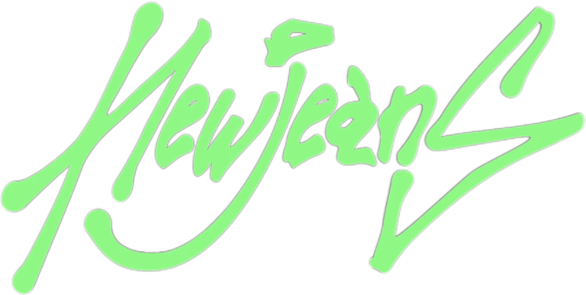

 |
.jpg) |
.JPG) |
|
《Bubble Gum》偏向泡泡糖流行（Bubblegum Pop），音色明亮干净，旋律简洁上口，配器轻量化，合成器音色清甜，节奏轻快，叙事聚焦青涩、纯粹的少年情愫，听觉门槛低，兼具复古怀旧与清新感，是柔和治愈向的作品。 |
|
《How Sweet》融合 90 年代新杰克摇摆（New Jack Swing）与都市 R&B，清晰的铜管色彩、弹性十足的贝斯律动，节奏富有摇摆感，和声编排饱满。歌词延续青春叙事，表达甜蜜舒展的心动感受，编曲复古质感浓郁，节奏律动的颗粒感强，在维持组合固有美学的同时，在节奏布鲁斯方向做出新的音色探索。 |
|
《Supernatural》曲目以 New Jack Swing 为基底，融合复古舞曲与都市 R&B，弹性切分鼓组、滑音贝斯与明亮键盘音色搭建编曲框架，配器简约克制。人声和声柔和舒展，延续组合弱化 Auto-Tune、保留原生声线的混音特点。歌词围绕宿命般的心动展开，描绘不受理性束缚的浪漫羁绊，朦胧神秘的意象，为青春叙事增添独特氛围感。 |
|
《Right Now》属于轻快律动流行，融入桑巴节奏元素，通透的鼓组与灵动贝斯构建明快声场，配器轻量化，音色干净透亮。人声演绎松弛自然，不做复杂声部叠加。歌曲聚焦当下的陪伴与即时的快乐，风格轻松治愈，和《Supernatural》内敛梦幻的气质形成互补。 |
|
《Ditto》是 Baltimore Club 风格的代表性流行作品，融合碎拍（breakbeat）、氛围 Drum & Bass 元素，以循环的鼓组动机、低温感的合成器音色构建冬日朦胧声场。编曲刻意压低动态，大量留白，人声叠加混响，营造出怀旧、朦胧的距离感，文本围绕青春期朦胧的眷恋、单向的思念与记忆的滤镜展开，带有东亚式含蓄的情感表达。 |
|
《OMG》作品以 UK Garage 为底色，糅合 Melodic Rap、Trap 与软 R&B，节奏上运用 UKG 标志性的 2‑step 切分鼓点，贝斯线条灵动跳跃。段落结构富于变化，主歌偏向叙事说唱化表达，副歌转向旋律化合唱，Bridge 段落的音色转向空灵缥缈。在律动复杂度与旋律传唱度之间取得平衡，延续复古电子审美，同时强化节奏型的现代性。 |
|
《Attention》作为组合出道开篇曲目，作品植根于 90 年代当代 R&B 与极简流行框架，以松弛的切分律动、弱化厚重配器的编曲逻辑，摒弃 K‑pop 传统密集 drop 结构。编曲以干净的底鼓、柔和的合成器垫音构建声场，人声采用多层次轻和声叠加，声线处理偏向自然化、去修饰化，弱化 Auto‑Tune 的强效果。 |
《Hype Boy》该曲融合 Future Bass 与 2000 年代流行 R&B，采用碎片化前奏、循环动机式旋律写作，配器克制且空间感开阔。编曲运用轻量化合成器 pluck 音色、松散的鼓组律动，主歌与副歌之间没有强烈的动态落差，依靠人声声部的交替编排制造层次变化。 |
|
《Cookie》曲目以极简嘻哈律动为基底，融合另类 R&B，采用紧凑的 minimal beat，鼓组节奏稳定内敛，低音线条克制，没有爆发式的编曲冲击。人声采用半念白式的松弛演绎，咬字偏向慵懒随性，歌词以隐喻化表达，传递少女独立自信的自我认知。 |
|
《Hurt》偏向抒情向的另类 R&B 作品，配器大幅做减法，以绵长的合成器 pad、轻柔的打击乐铺底，弱化强节奏驱动，侧重和声色彩与人声线条的表达。整体声场静谧、疏离，旋律线条婉转内敛，歌词刻画青春期敏感、怅然的情绪内耗 |
|
《New Jeans》作为 EP 的序曲 intro 曲目，属于俱乐部向流行，以短促的合成器动机、持续的四四拍律动，营造派对开场的松弛氛围，音色明亮通透，承担专辑概念的引入功能，起到承上启下的过渡作用，奠定整张 EP 轻快、舞动化的基调。 |
|
《Super Shy》为 Bubblegum Liquid Drum’n’Bass 与 Jersey Club 融合作品，采用短促跳脱的 kick 鼓组、切分碎拍，节奏灵动轻盈，人声游走于真声与轻假声之间，旋律极简、重复性强，适配集体舞蹈传播。 |
|
《ETA》名称取自 “Estimated Time of Arrival”，曲风融合 Funky Break 与软流行，鼓组借鉴经典 Think break 采样，律动松弛慵懒，吉他音色干净，配器简约。歌词以朋友之间的对话视角，带有生活化的叙事感，跳出恋爱主线，刻画同伴之间的陪伴与共情 |
|
《Cool With You》偏向欧陆复古流行与 Soft R&B，编曲以绵长的合成器音色、舒缓的贝斯线条为主，节奏平缓，动态起伏微弱，人声和声精致柔和，氛围感浪漫克制。文本探讨亲密关系里包容、自在的相处状态，不追求戏剧化的情感冲突，以平淡舒展的听觉质感，诠释松弛的亲密美学。 |
|
《ASAP》收尾曲目，轻快的复古流行，明亮的合成器音色、跳跃的节奏，旋律甜美轻盈，歌词描绘期待与想见之人重逢的雀跃心绪，作为 EP 的尾声，收束整张 EP 青春、明快的整体情绪，形成闭环。 |